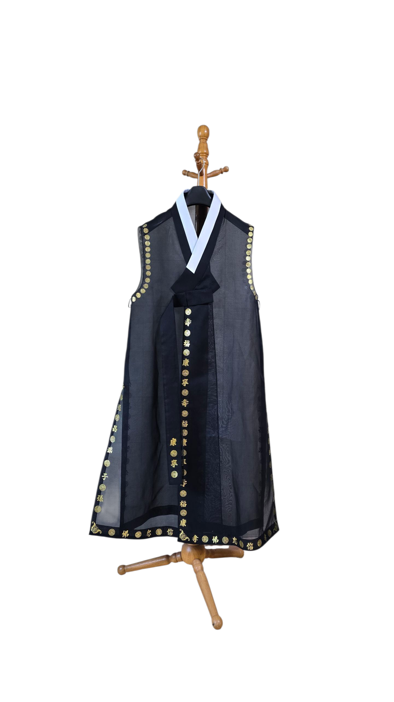

수복강녕(壽福康寧) 쾌자
전통에 대한 경의, 그리고 현대를 살아가는 우리를 위한 새로운 해석. 우리가 추구하는 행복을 나타내는 고사성어를 표현해보았습니다.
Concept & Story
경계를 넘나드는 경험 속에서 얻은 영감은 '융합'이었습니다. 과거와 현재, 전통과 혁신이 공존하는 옷을 생각해보았습니다. 이 옷은 단순한 의복이 아닌, 입는 사람의 안녕을 기원하는 부적과도 같습니다. 전통적인 길상(吉祥) 문자인 '수(壽), 복(福), 강(康), 녕(寧)'을 금박 자수로 옷에 새겼습니다. 그리고 현대 가장 많이 입는 티셔츠와 반바지와 같이 어울리게하여 공존을 디자인해보았습니다.
Design Details
- 소재 (Material): 시원하고 적당한 광택 그리고 비치는 물모시 소재를 사용하여 답답하지않고 시원하고 신비로운 느낌을 강조해보았습니다.
- 금박 (Embroidery): 장수, 행복, 건강, 평안을 의미하는 '수복강녕(壽福康寧)'과 믿음을 상징하는 '신(信)' 등의 한자(Hanja)를 금박으로 새겨넣어 고급스러움을 극대화했습니다.
- 실루엣 (Silhouette): 전통적인 쾌자의 형태를 기반으로, 현대적인 레이어드 스타일에 용이하도록 비대칭적인 라인과 개방된 형태로 디자인되었습니다.
- 장식 (Accessory):매듭은 고정시키고 버튼으로 쉬운 스타일링을 구현해보았고, 술띠, 갓, 갓끈, 티셔츠 등으로 스타일에 따라 다채로운 연출이 가능하도록 했습니다.